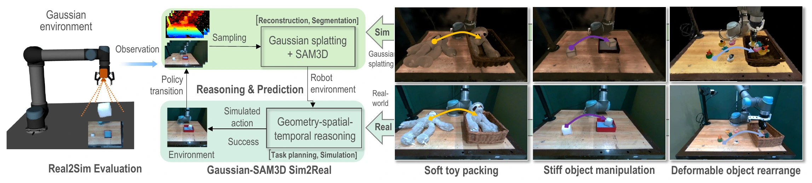
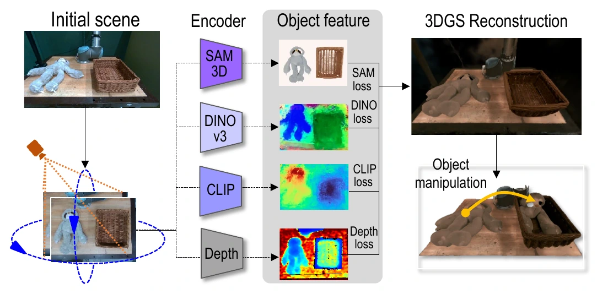
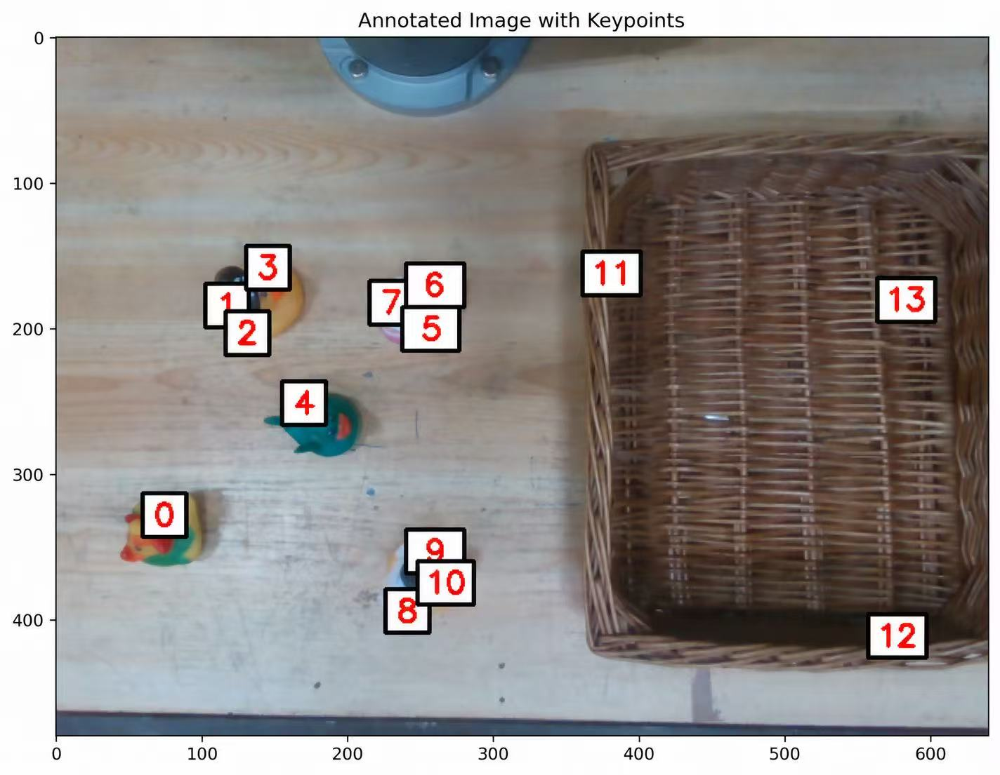
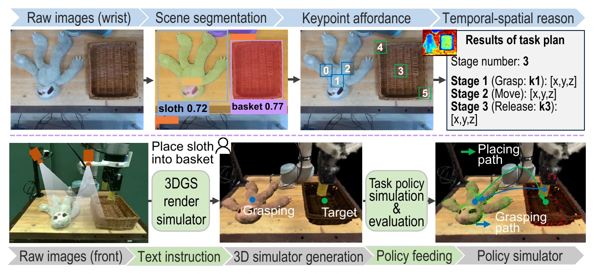
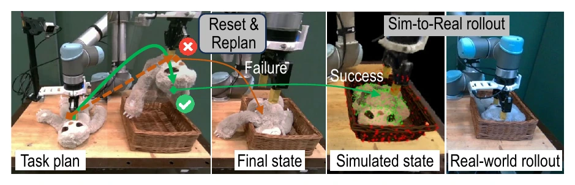
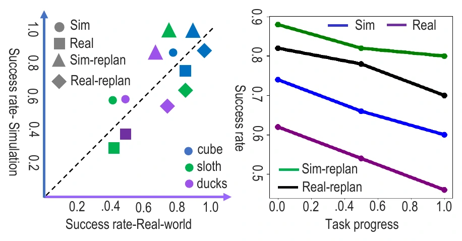
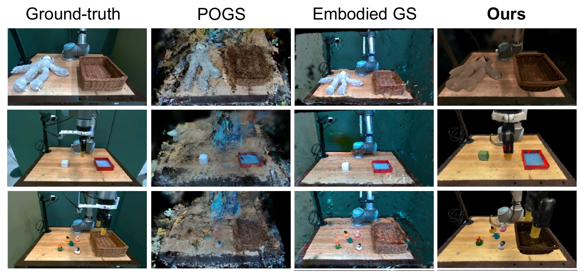

Beyond the action proposal
A plausible action does not ensure the intended final object state.
Simulation and evaluation before acting.
We reconstruct robotic scenes to reason about future states
and verify actions and outcomes before execution.
Reliable manipulation requires geometric understanding, post-action reasoning and evaluation before execution.
A plausible action does not ensure the intended final object state.
Real-world trials are costly. We evaluate candidate behaviours in a reconstructed environment before rollout.
We ground language-guided keypoints in 3D geometry to support feasible manipulation.
Our idea: a geometry-aware simulator that verifies actions and outcomes before execution.
We integrate scene reconstruction, spatio-temporal reasoning and state-based trajectory planning in one robotic environment.

We combine 3D Gaussian Splatting and SAM3D with RGB-D observations to reconstruct scenes at real-world scale, aligned with the robot.
Gaussian rendering provides photorealistic visual observations.
Explicit scene and object geometry supports collision and contact reasoning.
Robot kinematics and physics/contact simulation govern the rollout; rendering supplies the observations.


We lift task-relevant keypoints into metric 3D using depth, then encode proximity, alignment and relative pose as task constraints.
Identify task-relevant objects and relations.
Specify stage goals and path requirements.
Optimize the end-effector pose and gripper parameters.
We predict final object states from candidate release poses, filter them with geometric checks, and plan trajectories toward the selected state.

Inverse-kinematics feasibility and path requirements.
Geometric clearance along the candidate trajectory.
The final object state satisfies the task goal.
Revise the plan and repeat simulation before execution.
Execute the verified plan on the real robot.
Our full task rollouts pair simulation with real-world manipulation.
We grasp, transfer and place the cube inside the box without collision.
Full sequences, retimed for visual alignment.
Part of the toy remains outside the basket, failing the full-containment goal.
We revise the policy and evaluate it in simulation before execution, achieving successful packing.
Revise → Simulate and evaluate → Execute

We evaluate reconstruction quality, sim–real consistency and manipulation success.
Our simulator captures real-world success trends across tasks, supporting evaluation before execution.

Our evaluation-and-replanning loop raises mean real-world success by 24.7 percentage points.
Mean real-world success
Three-task average
| Task | Without replanning | With replanning | ||
|---|---|---|---|---|
| Simulation | Real world | Simulation | Real world | |
| Cube placing | 80.0 | 80.0 | 100.0 | 90.0 |
| Toy packing | 60.0 | 40.0 | 100.0 | 80.0 |
| Duck rearrangement | 60.0 | 46.0 | 80.0 | 70.0 |
| Average | 66.7 | 55.3 | 93.3 | 80.0 |
We achieve the best SSIM and LPIPS, and second-best PSNR among the compared methods.

| Method | PSNR ↑ | SSIM ↑ | LPIPS ↓ |
|---|---|---|---|
| GScream | 17.82 | 0.590 | 0.560 |
| VR-GS | 24.13 | 0.833 | 0.320 |
| Decoupled GS | 27.32 | 0.905 | 0.300 |
| POGS | 19.66 | 0.869 | 0.098 |
| D3DGS | 12.05 | 0.399 | 0.230 |
| Embodied GS | 14.95 | 0.389 | 0.360 |
| Robot-GST (ours) | 24.64 | 0.963 | 0.044 |
PSNR in dB; LPIPS uses VGG. Bold: best. Underline: second-best.
We build a Gaussian-SAM3D robotic environment that turns visual observations and language instructions into geometric constraints, predicted object states and executable motion.
By simulating candidate behaviours before execution, we evaluate both trajectory feasibility and task outcomes. Across three manipulation tasks, our framework connects geometric reasoning with more reliable real-world execution.